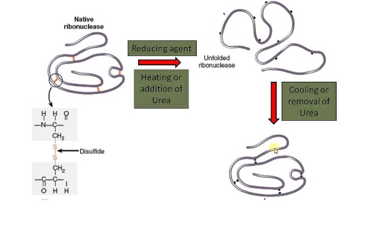
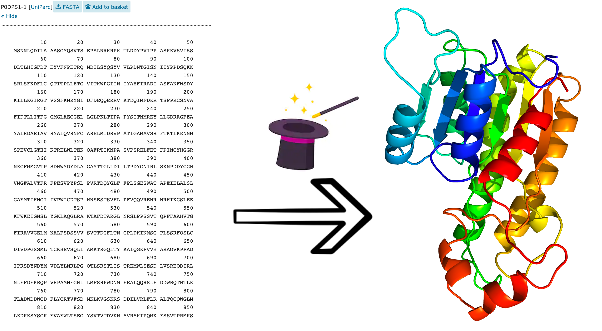
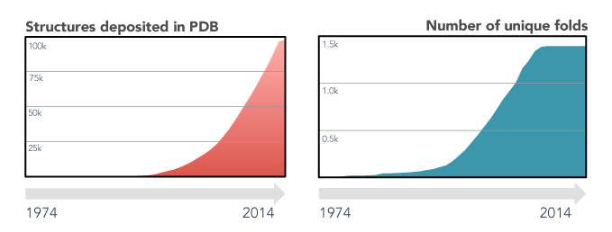
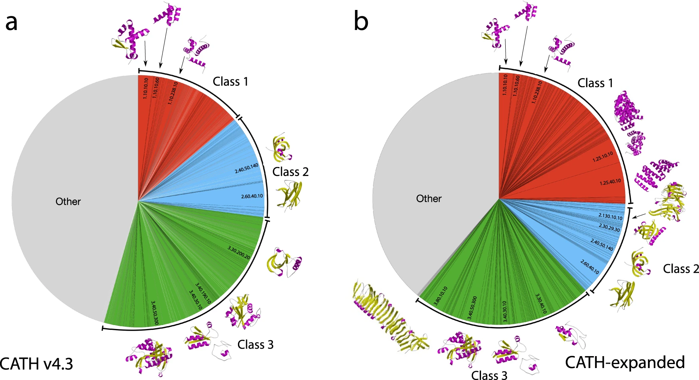
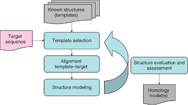
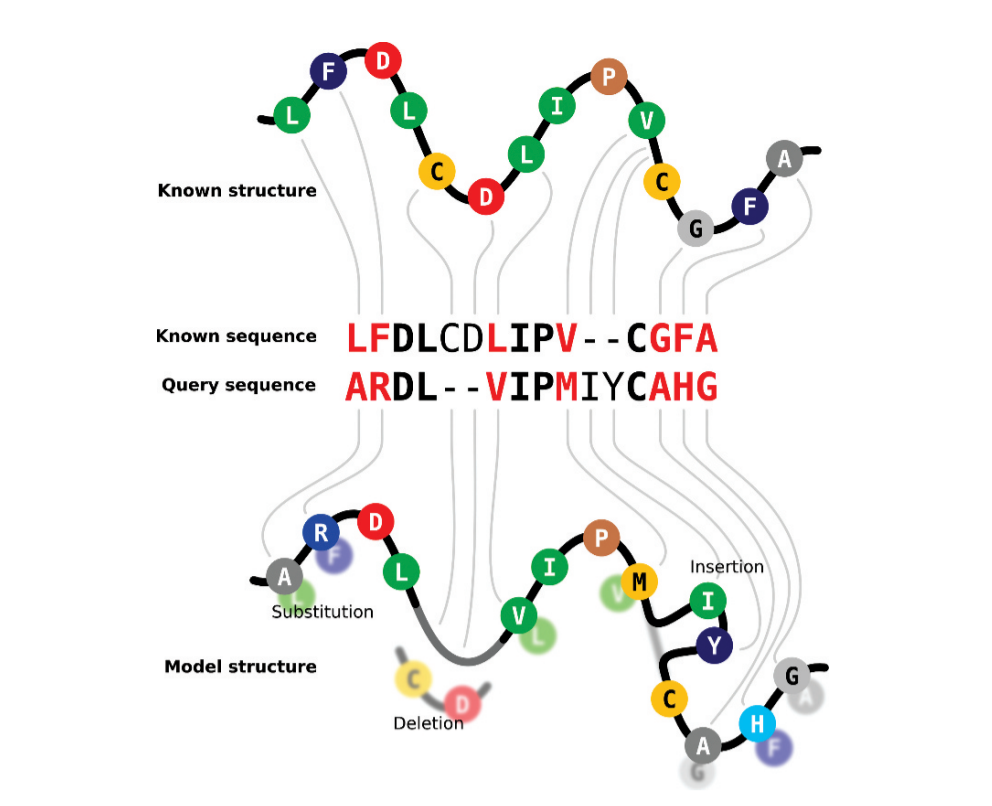
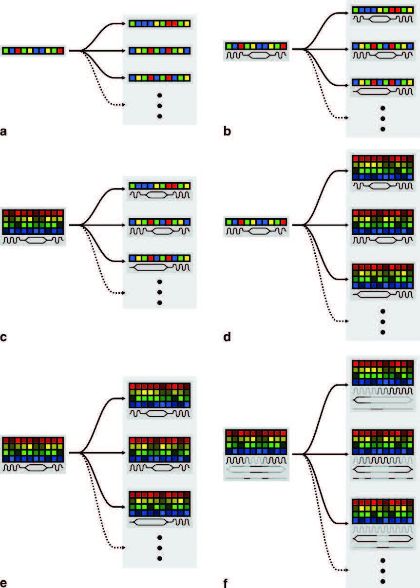
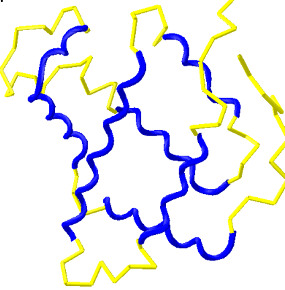
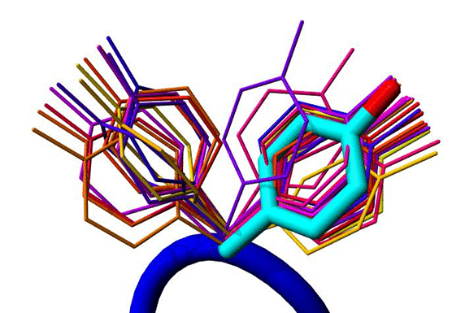
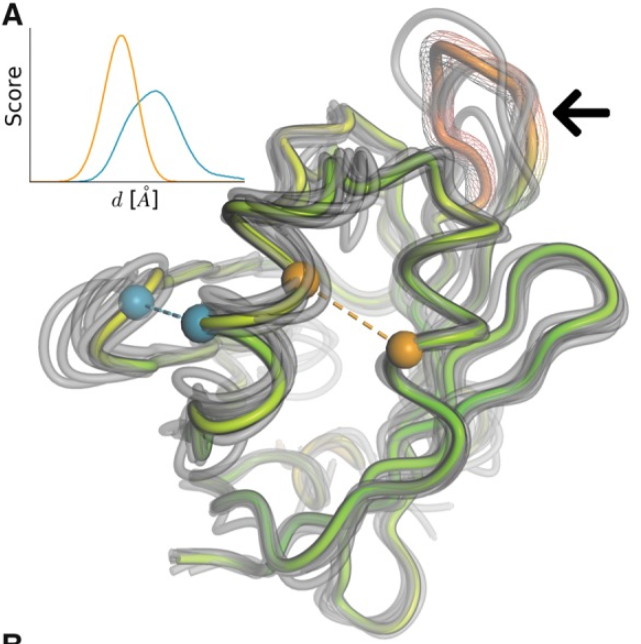

Homology Modeling
1 Modeling protein structures: Mind the gap
The number of protein sequences in databases growth exponentially during the last decades, particularly after the revolution of high throughput sequencing methods.
However, experimental determination of 3D protein structures is often difficult, time-consuming, and subjected to limitations, such as experimental error, data interpretation and modeling new data on previously released structures. Thus, despite substantial efforts that started at the beginning of the 21st century to implement high-throughput structural biology methods (see for instance Manjasetty et al. 2008), the availability of protein structures is more than 1,000 times less than the number of sequences. For instance, in February 2025, there are >250 M sequences in Uniprot or >700 M in MGnify proteins, while only ∽220k structures in RCSB Protein Databank. This difference is called the protein sequence-structure gap and it is constantly widening (Muhammed and Aki-Yalcin 2019), especially if we consider the sequences from metagenomics databases not available in Uniprot.
Thus, accurate and reliable prediction of the 3D structure of any given protein is needed to make up for the lack of experimental data.
Are protein structures predictable at all?
The properties of the amino acids determine the Φ and Ψ angles that eventually shape the higher structural levels. However, protein folding can be more complex, as it should be coupled with protein synthesis.
One can imagine that the complexity and diversity of protein structures in nature can be enormous. Indeed, John Kendrew and his co-workers seemed very disappointed in the determination of the first three-dimensional globular structure, the myoglobin in 1958 (Kendrew et al. 1958):
Perhaps the most remarkable features of the molecule are its complexity and its lack of symmetry. The arrangement seems to be almost totally lacking in the kind of regularities which one instinctively anticipates, and it is more complicated that has been anticipated by any theory of protein structure.
Not much later, in 1968, Cyrus Levinthal (1922-1990) published the so-called Levinthal’s paradox, stating that proteins fold in nano/milliseconds, but even for small peptides it will take a huge time to test the astronomical number of possible conformations. Say a 100 aa small protein; it will have 99 peptidic bonds and 198 different Φ and Ψ angles. Assuming only 3 alternative conformations for each bond, it will yield 3198 (= 2.95 x 1095) possible conformations. If we design a highly efficient algorithm that tests 1 conformation per nanosecond:
Considering that the age of the universe is 13.8 billion years, predicting protein structures does not seem an easy task.
In this context, a very simple experiment 50 years ago, led some light on the protein folding mechanism. Cristian Anfisen was able to completely denature (unfold) the Ribonuclease A, by the addition of reducing agents and urea under heat treatment, and subsequently switch to normal conditions that allow the protein to re-fold fully functional. This experiment indicates that the amino acid sequence dictates the final structure. Notwithstanding some relevant exceptions, this has been largely confirmed.

One can imagine that in vivo native structures of proteins look-alike the most stable conformation, i.e., the global minimum of free energy. That is the basis of the funnel model of protein folding, which assumes that the number of possible conformations is reduced when a local energy minimum is achieved, constituting a path for the folding process.
You can predict protein structures because they only depend on their sequence. But to get accurate predictions, you either need a lot of time and powerful computers… or really efficient methods. We’ll talk more about this.
Homology modeling is one of the most convenient tricks to get around this limitation. Basically, the strategy is to add more layers of additional information to amino acid properties, namely evolutionary conservation of sequences and structures.
Very often, you already have some information about your protein before you create models. For example, if it is an enzyme, you may have discovered the catalytic residues or the substrate interaction region. It is also advisable to look in the literature, in particular to see if there is a companion paper to the corresponding PDB structure(s) that may be available or that you may be able to find and use as a template(s) for modeling.
2 Comparative modeling: Conservation is the key

Traditionally and conceptually, protein structure prediction can be approached from two different perspectives: comparative modeling and ab initio prediction. In the comparative modeling approach, one can predict the 3D structure of protein sequences only if their homologs are found in the database of proteins with known structures. Of course, identification of such homologs is key here. Until recently, most of the development in protein modeling has been driven by the development of methods to identify distant sequence similarities that would reflect similar protein folds. On the other hand, ab initio modeling is only based on the physicochemical properties of the molecule.
Homology modeling and Comparative modeling are commonly used interchangeably. However, comparative modeling can be regarded as a broader approach that leverages known structures, encompassing both homology modeling and fold recognition or threading.
Homology modeling generates structural models based upon the structure of (usually) one related homologous structure. Thus, the accuracy of homology modeling is limited by the availability of similar structures. Ab initio predictions are limited by mathematical models and computational resources and are often useful only for small peptides.
To maintain structure and function, certain amino acids in the protein sequence are subject to greater selection pressure. They either evolve more slowly than expected or within certain constraints, such as chemical similarity (i.e., conservative substitutions). Therefore, homology modeling approaches assume that a similar protein sequence involves similar 3D structure and function. Indeed, proteins in the nature do not seem to contain all the possible diversity (Orengo, Jones, and Thornton 1994). Thus, although the number of published sequences and structures is constantly increasing, the number of unique folds remained nearly constant since 2008 until very recently.

This means that the space of protein sequences is much larger than the space of structures. Some databases, like Scop2 or CATH (Figure 8) have leveraged this by employing hierarchical classifications of structures into a limited number of distinct categories. Between 2006 and 2024, the number of different domains in CATH increased from 86,000 to 600,000, while the number of architectures remained relatively stable at 40 and 43, respectively. Even after analyzing numerous new structures from the AlphaFold database, only 25 novel superfamilies (and no new architectures) were identified (see Figure 9).


To summarize, protein structures tend to be more conserved than their sequences, enabling model construction through comparisons of proteins with differing sequences. Biological sequences evolve through mutation and selection, with varying selection pressure for each residue position in a protein based on its structural and functional significance. Protein comparison methods such as sequence alignments aim to convey the evolutionary history of proteins.
3 Homology modeling in four steps

A traditional protocol of homology modeling will construct a partial or full model from a proein sequence based in a single homologous template. Overall a sequence identity of >30% between template and target is required to obtain reliable results. These methods require three steps: (1) identification of the most appropriate template, (2) alignment of the query sequence and template, and (3) construction of the model. These steps can be approached with different methodological alternatives and may yield different results that need to be evaluated (step 4) to find the best solution for each step. For a more detailed overview of homology modeling, I recommend reading Haddad, Adam, and Heger (2020).
In this course, we will focus on end-to-end modeling using SWISS-MODEL (A. Waterhouse et al. 2018), a fully automated modeling server that allows you to construct models without having to have a strong bioinformatics background or programming skills. Early versions of SWISS-MODEL only allowed modeling of sequences with homologs in databases, but as discussed below, implementation of advances in template recognition and model building has increased modeling capability and accuracy, especially in the last 15 years.
SWISS-MODEL has several supported inputs. Typically, you enter a single sequence query for template search, but you can also bypass this step and directly enter the desired template or even a template and a custom alignment. We will start with the first alternative.
In-class Homology Modeling exercise: Quick Modeling with SWISS-MODEL.
As an exercise, we are modeling a human DNA repair protein, NEIL2, and a viral DNA polymerase (HAdV-2 pol). We will intersperse discussion about modeling with the exercise steps.
Step 1+2. Template search and align.
Where can we search?
The template searching consists in finding a protein with known structure(s) with a sequence related to our protein. As we mentioned earlier, the RCSB Protein Data Bank (PDB) is the largest database of protein structures. Thus, we can search for templates by comparing the sequence of our protein with the sequence of all proteins in the PDB. However, the PDB was created as a repository to contain all the macromolecular structures, not to search templates for modeling. Similar to other end-to-end software, SWISS-MODEL has its own curated database, the SMLT (SWISS-MODEL template library). This is based on profiles alignments from the PDB, is updated weekly, and is also annotated and indexed to facilitating searching. As of February 5, 2025, SMLT contains 158,703 unique protein sequences that can map into 386,135 biological units. Since 2023, SWISS-MODEL also searches in the AlphaFold DB.
Now, you first need your sequences. A protein sequence database like Uniprot or NCBI Protein, is a good place for this task.
If you want to cheat yourself, just follow the links to HAdV-2pol and NEIL2 sequences.
How can we search accurately and fast?

To find templates, sequences must be compared, so an accurate and powerful alignment method is essential. Comparing a protein sequence to an entire database is time consuming because you are comparing to completely unrelated proteins, which means a loss of resources. Two fundamental improvements have increased the capacity of template search: (1) the introduction of secondary structure (SS) by comparing SS predictions of the query protein and secondary structures of the protein database, and (2) the use of profiles to facilitate the comparison. Profiles are a mathematical method of summarizing a multiple sequence alignment that quantifies the probability of each amino acid at each position. A particular type of profile Hidden Markov Models (HMM) are very useful for searching databases for similar sequences. Transition probabilities (i.e., the probability that a particular amino acid follows another particular amino acid) are also modeled. In addition, HMMs include insertions and deletions of amino acids. These features allow HMMs to model entire alignments in great detail, including very divergent regions, and facilitate the identification of highly conserved positions that define not only protein function but also folding. For example, glycine residues at the end of each beta strand or a pattern of polar residues that favor alpha helices. Prior comparison of the query sequence to a database of sequences allows us to incorporate evolutionary information about the sequence. Therefore, we started from a requirement of >30% identity to obtain good models before the implementation of profiles, to good models even with ⁓20% identity or below. Moreover, the generation of profiles also facilitates clustering of the search database, reducing search time. The implementation of these capacities led to the implementation of the so-called fold recognition in homology modeling.

Template searching in SWISS-MODEL has evolved over the years toward more accurate results. Currently, this is done with HHblits (Remmert et al. 2011), a iterative profile-profile method. We can also search for templates using Blast or other profile-profile methods, like Psi-BLAST, HHPred, or JackHMMER. Then, the templates are ranked between 0 and 1 using two different numerical parameters: GMQE (global model quality estimate) and QSQE (quaternary structure quality estimate). Briefly, GMQE uses likelihood functions to evaluate various properties of the target-template alignment (sequence identity, sequence similarity, HHblits score, the agreement between the predicted secondary structure of target and template, the agreement between the predicted solvent accessibility between target and template; all normalized by the alignment length) to predict the expected quality of the resulting model. QSQE evaluates the likelihood of the oligomeric state of the model.
If you click on “Build Model”, it will directly use the top-ranked template, so you’ll miss some fun, but you can go back for that later on using the “Templates” tab.
Could you foresee which of our queries will give rise to a better model? Why?
Step 3. Model Building.
By default, SWISS-MODEL will provide 50 ranked possible templates. The output also contains information about the method and resolution of the templates, the % of identity (and alignment coverage) with the query sequence, and the GMQE and QSQE.
The top template is marked by default and it likely will give the best model, but it is also interesting to try some alternative templates depending on the downstream application of the model (see below). For instance with a different substrate/cofactor that can have a key role in the protein function or with different coverage or % identity.
Once the template(s) is selected, model coordinates are constructed based on the alignment of the query and template sequence using ProMod3 module (Studer et al. 2021). SWISS-MODEL uses a fragment assembly, which is also the bases of Fold-recognition or Threading methods (see Threading section). Other programs, like Modeller, are based in the satisfaction of general spatial restraints (Giacomo Janson et al. 2019). Modeller is a command-line tool that allow full customization of the modeling, which requires more knowledge about the process but can be very useful for some types of proteins (see (Webb and Sali 2017)). However, it has been implemented in some online servers (ModWeb), Python notebooks (see for example https://github.com/pb3lab/ibm3202) and user-friendly applications, including ChimeraX and Pymol (Pymod plugin, G. Janson and Paiardini (2021)). Modeller can be also called from the HHPred output (if you included PDB as a searchable database), which is very convenient to model remote homologs using several templates in a few minutes.
Fragment assembly will use the template core backbone atoms to build a core structure of the model, leaving non-conserved regions (mostly loops) for later. Loops modeling includes the use of a homologs subset of a dedicated loop database, Monte Carlo sampling as a fallback and even ab initio building or missing loops.

Then, positioning of side chain of non conserved amino acids is undertook. The goal is finding the most likely side chain conformation, using template structure information, rotamer libraries (from a curated set known protein structures) and energetic and packaging criteria. If many side chains have to be placed in the structure it will lead to a “chicken and egg problem”, as positioning one rotamer would affect others. That means that identification of possible hydrogen bonds between residues side chains and between side chains and the backbone reduce the optimization calculations. At the end of the day, the more residues correctly positioned, the best model.

Finally, a short energy minimization is carried out to reduce the unfavorable contacts and bonds by adapting the angle geometries and relax close contacts. This energy minimization step or refinement can be useful to achieve better models but only when the folding is already accurate.
Step 4. Result assessing.
The computer always give you a model but it doesn’t mean that you have a model that makes sense. How can we know if we can rely on the model? Output models are colored in a temperature color scale, from navy blue (good quality) to red (bad quality). That can help us to understand our model in a first sight. Also, this is an interactive site and you can zoom-in, zoom-out the model. Many other features are available to work on your model. For instance, you can compare multiple models, you can change the display options. You can also download all the files and reports on the “Project Data” button.
There is also a “Structure Assessment” option. This provide you a detailed report of the structural problems of your model. You can see Ramachandran plots that highlight in red the amino acid residues with abnormal phi/psi angles in the model and a detailed list of other problems.
The GMQE is updated to the QMEAN Zscore and QMEANDisCo (Studer et al. 2020). The QMEAN Z-score or the normalized QMEAN score indicates how the model is comparable to experimental structures of similar size. A QMEAN Z-score around 0 indicates good agreement, while score below -4.0 are given to models of low quality. Besides the number, a plot shows the QMEAN score of our model (red star) within all QMEAN scores of experimentally determined structures compared to their size. Overall, the Z-score is equivalent to the standard deviation of the mean.

The QMEANDisCO was implemented in SWISS-MODEL in 2020 and it is a powerful, single parameter that combines statistical potentials and agreement terms with a distance constraints (DisCo) to provide a consensus score. DisCo evaluates consistencies of pairwise CA-CA distances from a model with constraints extracted from homologous structures. All scores are combined using a neural network trained to predict per-residue scores. We can check a global score, but also a local score for each residue, that help us to understand which regions of the model are more likely to accurately folded (i.e. they are more reliable).
Swissmodel Assessment (A. M. Waterhouse et al. 2024) (https://swissmodel.expasy.org/assess) can be also used as an external tool analyze models obtained with other methods in order to make them comparable, you just need .pdb files of your model and, optionally, the reference template protein.
There are other independent model assessing tools commonly used to assess protein models, like VoroMQA (Olechnovič and Venclovas 2017) or MoldFold (McGuffin et al. 2021). VoroMQA is very quick method that combines the idea of statistical potentials (i.e. a knowledge-based score function) with the use of interatomic contact areas to provide a score in the range of [0,1]. When applied to PDB database, most of the high-quality experimentally-based structures have a VoroMQA score >0.4. Thus, if the score is greater than 0.4, then the model is likely good and models with score <0.3 are likely bad ones. Models with score 0.3-0.4 are uncertain and should not be classified with VoroMQA. On the other hand, ModFold is a meta-tool that provides you a very detailed report (and parseable files) with local and global scores, but it can take hours/days to obtain the result, so we tend to use it only with selected models.
Models from the AlphaFold DB are appended to the available structures / models if available. For these models we use the confidence values provided by AlphaFold (pLDDT) rescaled to be between 0 and 1. Since both pLDDT and QMEANDisCo are trained to predict lDDT (Cα-only for pLDDT and all-atom for QMEANDisCo) and are displayed in the same range, they should be considered comparable (From https://swissmodel.expasy.org/docs/repository_help.)
Another key parameter that you should know if you want to compare protein structures is the alpha carbon RMSD (see Structure alignment section). Any protein structural alignment will give you this parameter as an estimation of the difference of the structures. You can align structure with many online servers, like RCSB, FATCAT2 or using molecular visualization apps, including Mol*, ChimeraX or PyMOL (see Protein Structure Display section).
Which model is better? Which regions are more difficult to model? Why?
Corollary: What can I do with my model and what I cannot?
A big power entails a big responsibility. The use of models entails a precaution and a need for experimental validation. However, knowing the limitations of our model is required for a realist use of it; and limits are defined by the model quality.
The accuracy of a comparative model is related to the percentage sequence identity on which it is based. High-accuracy comparative models can have about 1-2 Å root mean square (RMS) error for the main-chain atoms, which is comparable to the accuracy of a nuclear magnetic resonance (NMR) structure or an X-ray structure. These models can be used for functional studies and the prediction of protein partners, including drugs or other proteins working in the same process. Also, for some detailed studies, it would be convenient to refine your model by Molecular Dynamics and related methods towards a native-like structure. I suggest checking the review by Adiyaman and McGuffin (2019) on this topic.
On the contrary, low-accuracy comparative models are based on less than 20-30% sequence identity, hindering the modeling capacity and accuracy. Some of these models can be used for protein engineering purposes or to predict the function of orphan sequences based on the protein fold (using Dali or Foldseek).
As mentioned above, it also advisable to check the template structures and read the papers describing them in order to squeeze all the information from your model.
What do you think you could use our models of NEIL2 and HAdV-2pol?
4 Review Quiz
Created with Microsoft Copilot